サーバーとの同期
このページでは、ブランチにならぶ重要な機能であるサーバーとの同期についてみていきます。
なぜサーバーが必要か
ここまで、gitを手元のPCの中だけで使用してきました。しかし、gitはオンラインサーバーと同期させながら使用するのが一般的です。
サーバーを使うメリットは大きく以下の4つです。
- バックアップ：PCの記録が失われたとしても容易に復元可能。
- PC間の同期：複数のPCの間で、作業環境を同期。
- チーム開発：複数メンバーでの共同開発に際してコード・履歴を共有。
- 公開：ソースコードやドキュメントを容易に一般公開・配布できる。
サーバーは自前のものを用意することもできますが、一般にはホスティングサービスと呼ばれるgitサーバーを利用します。
※ 事前に環境構築などを参考に、ホスティングサービスのアカウントを作成しておいてください。本ページでは、GitHubでの操作例を示します。
バックアップやPC間の同期が目的なら、OneDriveやGoogleDriveなどのオンラインストレージを使えばよいと思った人もいるかもしれません。
しかし、オンラインストレージ内にgitリポジトリを作成するのはお勧めしません。これは、gitがオンラインストレージの同期機能と衝突し、最悪履歴の破損などが起きる可能性があるためです。
gitリポジトリのバックアップ・PC間の同期は、素直にgitサーバーとの同期機能を使いましょう。変更のコンフリクトの解決などはgitのほうが高機能なので、PC間の同期に限ってもgitを使う価値はあります。
ローカルとリモートの紐つけ
gitでは、手元のPC環境をローカル、サーバー環境をリモートと呼びます。
gitサーバーを利用する際には、まずローカルとリモートを紐付ける作業が必要です。ケースごとに必要な操作を説明します。
ケース1：ローカルにすでにリポジトリがある
手元のPCにはすでにリポジトリはあるが、途中でサーバーも利用したくなった場合、まずリモートにリポジトリを作成後、ローカルにリモートを登録します。
- リモートに新しいリポジトリを作成する。
- githubの場合、トップページのメニューから「Repositories」を選び、「New」を押す。
- リポジトリ名を決める。半角英数字とアンダーバー、ハイフンのみ。
- コードを公開するか（Public）、非公開にするか（Private）を選択。どちらでも問題ない（下記参照）。
- 画面下部の「Create repository」を押せば作成完了。
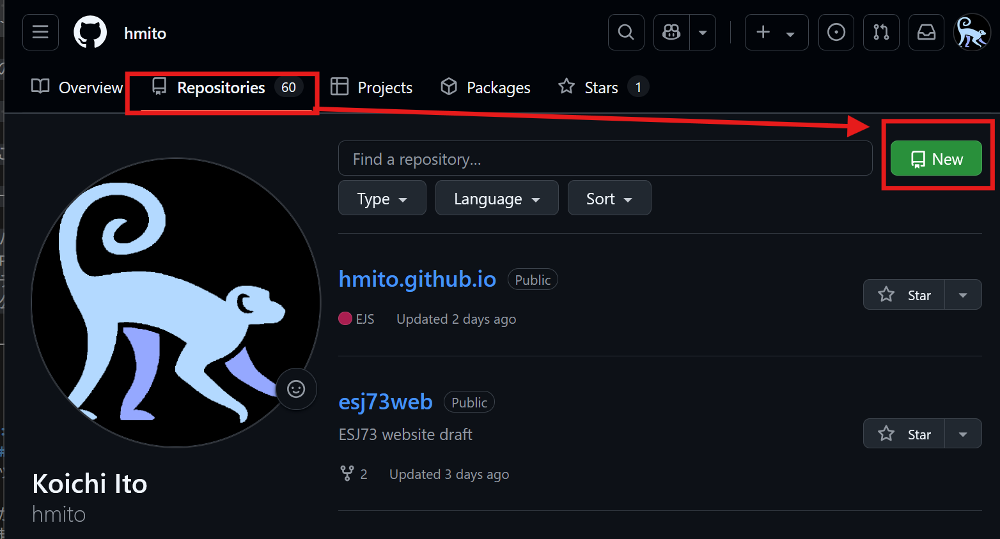
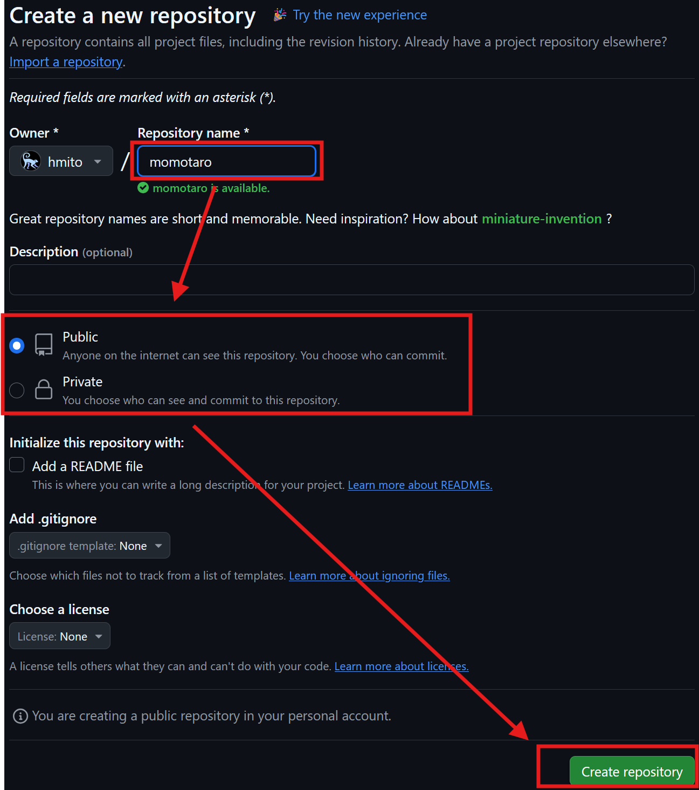
- httpsから始まるリモートリポジトリのURLをコピー。
- githubの場合、作成後に表示される画面に表示されている。右側のボタンを押せばコピー完了。
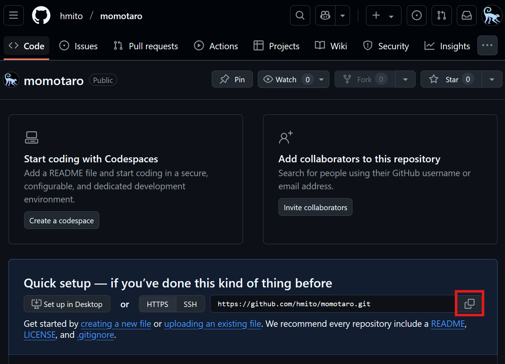
- VSCodeに戻り、「ソース管理」画面の設定メニューから「リモート」→「リモートの追加」の順に選択
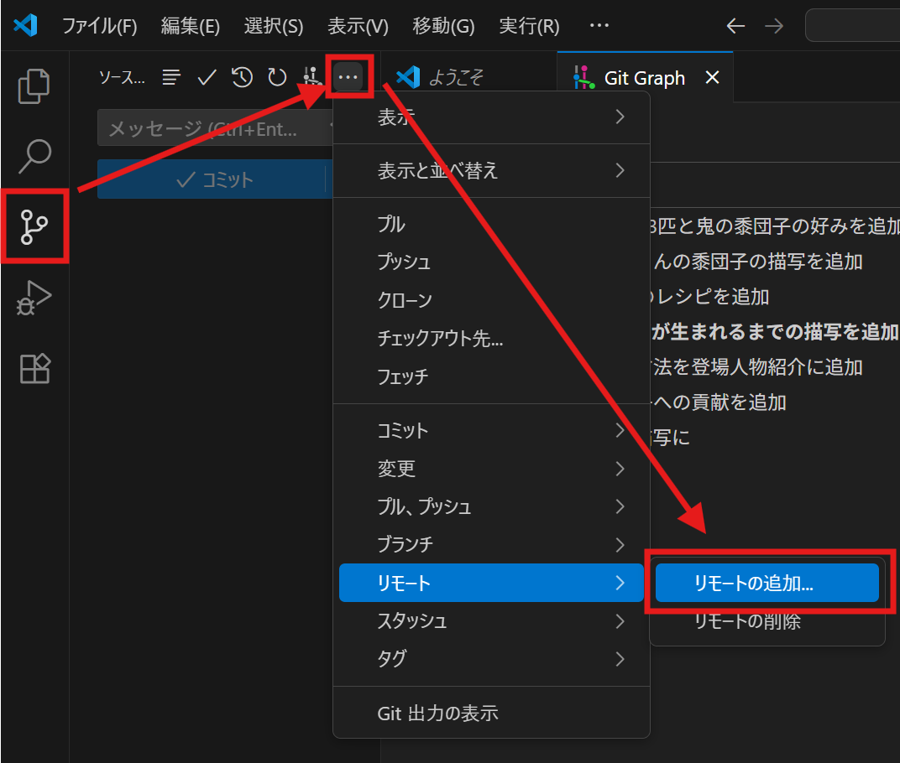
- 画面上部にURLの入力を求められるので、コピーしたリモートリポジトリのURLを入力し、「URLからリモートを追加する」を選択
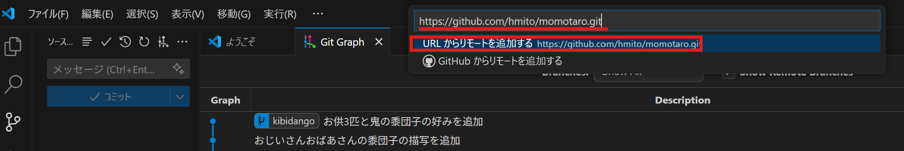
- リモート名の入力を求められる。「github」などでも構わないが、慣習では「origin」とする。
- あとは、リモートにブランチがないにそって同期したいブランチを順にリモートへとアップロード。
リポジトリの公開範囲、特に理由がなくとも「恥ずかしいから」とprivateとしておきたくなるところですが、publicと比較してのデメリットがいくつかあります。
- サービスの制限：無料アカウントでは、privateリポジトリの利用に制限が課せられている場合がある（共同作業可能な人数、作成できる個数など）
- 2025年現在、GitHubにはprivateリポジトリに大きな制約はないが、しばしば条件は更新されるため、気になる場合は調べることをお勧めする
- 実績紹介の機会の喪失：GitHubはじめ、ホスティングサービスのアカウントは、「これまでどんなコードを書いてきたか」を証明する手段として使われる。非公開とすると、そうした実績が外部に見えず機会損失にもなる。
- 他者への貢献機会の喪失：どんなにくだらないコードに見えても、そのコードが他の誰かの参考になることも。
もちろん、研究で使うコードを研究発表前に他者に公開するのはややリスクがある行為でもあります。すべてをpublicにする必要はありませんが、privateの方が常に良いわけではないことは押さえておきましょう。
なお、「恥ずかしい」に関して言えば、GitHubにはすでに無数の「コードの練習用」のリポジトリが登録・公開されているので、あまり気にしても意味がないかもしれません。
ケース2：リモートにすでにリポジトリがある
手元にコードはないが、どこかのサーバーにはすでにリポジトリが用意されている場合です。新しいPCで作業を始めるケース、他者が作成したプロジェクトを引き継ぐ場合などが該当します。この場合、ローカルにリモートリポジトリをダウンロードする「クローン Clone」という操作を行います。
- まず、対象のリモートリポジトリのURLをコピー（自分または他人のリポジトリ）
- githubの場合、リポジトリを開いた際に表示される「<> Code」ボタンを押すと、URLが表示される。
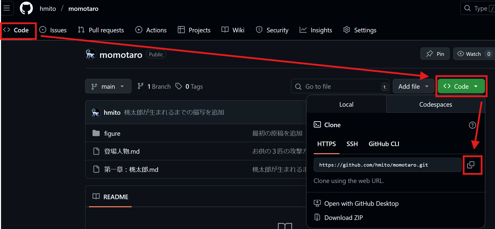
- VSCodeをフォルダを開いていない状態にする。すでにいずれかのフォルダを開いている場合、「ファイル」→「フォルダを閉じる」から閉じる。
- 「ソース管理」を開き、「リポジトリをクローンする」を選択
- 画面上部にURLの入力を求められるので、コピーしたリモートリポジトリのURLを入力し、「リポジトリのURL」を選択
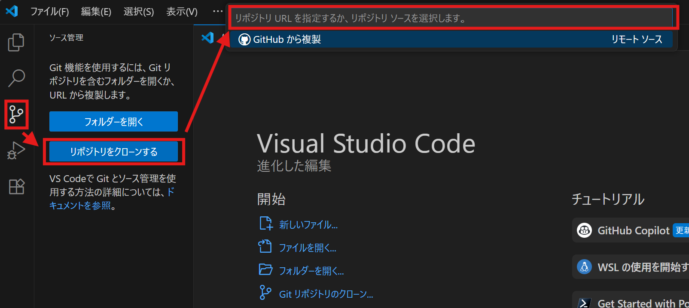
- クローンしたリポジトリを置くフォルダを選択。なお、選択したフォルダ内に、リポジトリと同名のフォルダが作成され、その中にリポジトリの中身が配置されます。
- 例：
prjフォルダを選択してmomotaroリポジトリをクローンすると、リポジトリの中身はprj/momotaro/の中に置かれます。
- 例：
- 必要に応じて、ローカルにブランチがないにそって、リモートのブランチを落としてくる。
ケース3：一から始める
まだリモートにもローカルにもリポジトリがない、gitによる管理を新たに始めるケースです。すでに書きかけのコード等があってもかまいません。手順としては、ケース1とケース2の組み合わせ、すなわち「リモートリポジトリを作成」後「ローカルにクローン」
- ケース1の手順1,2に従って、新たなリモートリポジトリを作成し、リモートリポジトリのURLをコピー
- ケース2の手順2,3,4,5に従って、リモートリポジトリをローカルにクローン
- ローカルにブランチがないにそって、リモートのmainブランチをローカルに落としてくる。
- すでに書きかけのコード等があれば、このタイミングでローカルにファイルを追加し、コミットする。
新たに研究プロジェクトをスタートする場合、ひとまずリモートリポジトリを作成してクローンしてくる癖をつけておくと良いと思います。
同期：プッシュとプル
同期はブランチ単位
リモートとローカルの同期は、ブランチ単位で管理されます。つまり、ローカルの「mainブランチ」とリモートの「mainブランチ」はそれぞれ個別にフォルダの状態が履歴上で管理されており、同期操作はこの二つのブランチ間で行われます。
コミット同様、同期も自動では行われず、手動で行う必要があります。これは、作業中にリモートからの同期によって作業環境が変わってしまうのを防ぐためです。例えば、共同作業をしている誰かがリモートのリポジトリ上でファイルを消すと、自動同期によって作業中の自分のファイルも消えてしまうかもしれません。
手動であれば、後述するように変更のコンフリクトによって警告され、双方の変更のどちらを選ぶか（あるいはどちらも残すか）を選択することができます。
GitGraphでは、以下のような3種類のブランチラベルでリモートとローカルのブランチが表示されます。
- 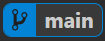「ブランチ名」：ローカルのブランチの状態
- 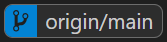 「リモート名/ブランチ名」：リモートのブランチの状態
- 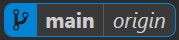 「ブランチ名|リモート名」：ローカルとリモートの状態が同じ＝すでに同期されている
つまり、表示が三つ目以外であれば、そのブランチは何らかの同期操作が必要な状況といえます。リモートとローカルの同期に使う操作は二種類です。以下、状況ごとに必要な操作を説明します。
- プル pull：リモートからローカルへコミットをダウンロード
- プッシュ push：ローカルからリモートへコミットをアップロード
実は、同期にかかわる操作としては、フェッチ Fetchと呼ばれるものもあります。これは、リモートやローカルのブランチの状態を更新せず、リモートにおける現在のブランチ状況のみ取得してくる操作です。Webブラウザの更新ボタンとほぼ同じ位置づけです。
フェッチは動作も軽いため、この解説では環境構築においてAuto Fetchとよばれる設定を行いました。これは定期的（デフォルトでは3分毎）にフェッチをバックグラウンドで行う操作です。
もし、Auto Fetchによる自動更新を待てない場合、ソース管理の「…」ボタンから、手動でフェッチを行う行うこともできます。
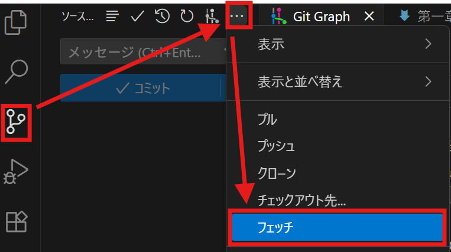
A. ローカルよりリモートが先 → pull
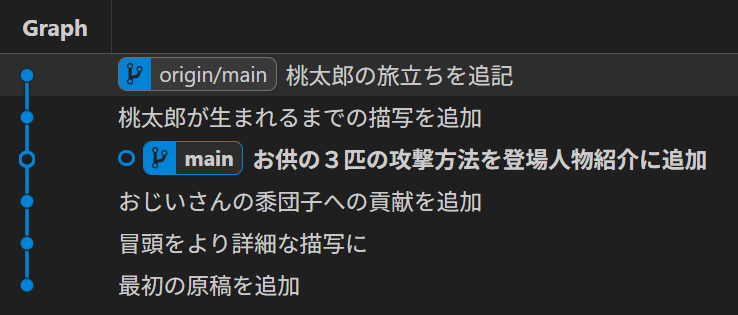
他の人（や他のPCからの操作で）リモートリポジトリが更新され、ローカルのファイル状態が古くなったケースです。この場合、リモートからコミット情報をダウンロードするプル pullが必要です。
- ローカルにおける当該ブランチを選択（ローカルブランチラベルをダブルクリック）
- リモートブランチラベルを右クリックし、「Pull into current branch」を選択
- ポップアップが出るが、「Yes, pull」を選択
B. リモートよりローカルが先 → push
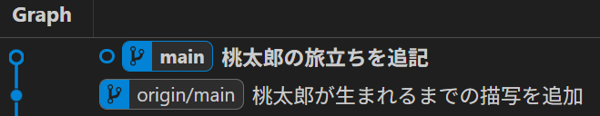
ローカルリポジトリ上でコミットを進めた結果、リモートのファイル状態が古くなったケースです。この場合、ローカルからリモートへコミット情報をアップロードするプッシュ pushが必要です。
- ローカルブランチラベルを右クリック し、「Push branch」を選択
- ポップアップが出るが、「Yes, push」を選択
C. ローカルとリモートが分岐 → pull-push
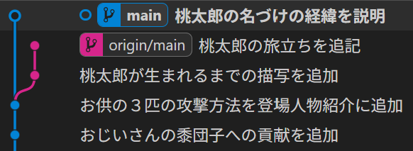
ローカルとリモートの双方が更新された結果、履歴上で枝分かれしてしまったケースです。この場合、先に プル pullを行い、分岐を解消してから プッシュ pushを行うことが重要です。
- ローカルにおける当該ブランチを選択（ローカルブランチラベルをダブルクリック）
- リモートブランチラベルを右クリックし、「Pull into current branch」を選択
- ポップアップが出るが、「Yes, pull」を選択
- コンフリクトがない（つまり双方で行われた編集に競合がない）場合、自動的にマージが行われる。
- コンフリクトがある場合、手動でのマージ操作が必要となる。コンフリクトの解決方法を参考に解決する。
- 無事マージが完了すれば、ローカルブランチラベルを右クリックし、「Push branch」を選択
- ポップアップが出るが、「Yes, push」を選択
まだリモートには反映したくない場合、手順4,5は省いて構いません。
D. ローカルにブランチがない → checkout
「リモート名/ブランチ名」というタグだけで、「ブランチ名」という同名のタグが見当たらない場合、そのブランチを触るためにはリモートからブランチを落としてくる必要があります。
- リモートブランチラベルをダブルクリック
- ポップアップが出るので「Checkout Branch」を選択
E. リモートにブランチがない → push
「ブランチ名」というタグだけで、「リモート名/ブランチ名」という同名のタグが見当たらない場合、リモートにまだブランチがプッシュされていません。プッシュの方法は通常と同じです。
- ローカルブランチラベルを右クリック し、「Push branch」を選択
- ポップアップが出るが、「Yes, push」を選択
ここまでGitGraph上でのプッシュ、プル操作について説明してきました。実は、これらの操作は「ソース管理」画面の「コミット」ボタンより簡単に行うことができます。すべての変更がコミットされると、ブランチの状況に応じて必要なプッシュ・プルを行う「変更の同期」ボタンへと切り替わります。下矢印がプル、上矢印やプッシュが必要なコミットの数を示しています。
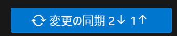
しかし、この機能はボタン一つで操作できてしまうがゆえに、実際にブランチに対してどのような操作を行っているのかが非常に見えにくくなる欠点があります。複雑な操作を行うためには、ブランチが更新時にどのように動くか自体に慣れておく必要があるため、GitGraphの様子がボタンを見ただけで想像できるようになるまでは、このボタンは使わずGitGraph上での操作を練習することをお勧めします。
普段の操作の流れと注意点
実際の開発時の流れは、以下のようになります。
- もし新しいプロジェクトをスタートさせる、新しいPCで作業を開始するときは、リモートリポジトリをクローンする
- 作業を開始するブランチに切り替え check outする
- リモートが進んでいる場合、可能であればプル pullしておく
- 編集作業を進め、ローカルリポジトリのコミットを進める
- 作業がひと段落したら、プルの必要がないことを確認してからプッシュ push、またはリモートのいずれかのブランチにマージ mergeしておく
ポイントは、以下のような点です。
- 競合が発生しない限りこまめにプル pullをしておく
- 頻繁なpullで、不必要な編集内容の競合：コンフリクトが発生することを防ぐことができます。
- 作業がひと段落した段階で、変更内容をpush/mergeしておく
- pushしていないコミットがたまると、他者がそれらの変更をpullできず不必要な編集内容の競合：コンフリクトを引き起こします
- リモートのブランチを直接操作することはできない
- ブランチのマージなども、ローカルでいったんそれぞれのブランチを操作した後、pushしてリモートに反映する
複数人で一つのプロジェクトを進める場合、それぞれが自由にリモートリポジトリを操作するためには、リポジトリのコラボレーターに登録する必要があります。
GitHubの場合は、以下のように操作します。
- GitHubにログインし、共同作業を行うリポジトリを開く
- Settingsのタブを押し、左メニューからCollaboratorsを選択
- 画面の「Add people」ボタンから、相手のGitHubユーザー名、メールアドレスなどから検索し追加、またはメールで招待
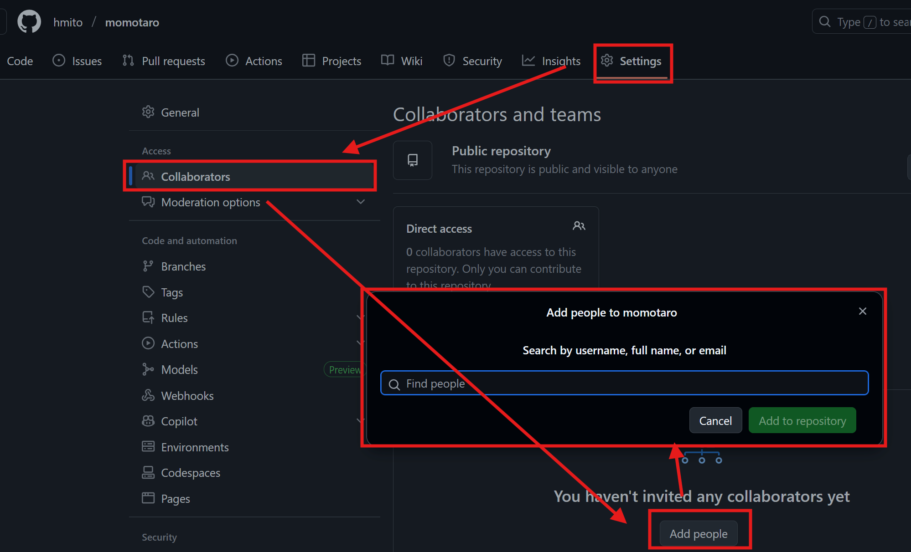
なお、複数人で共同作業をしても、他者のローカルのリポジトリの様子が見えることはありません。これは、個々のローカルはリモートとしかつながっていない（リモートを中心に個々のローカルが結びついている）ためです。